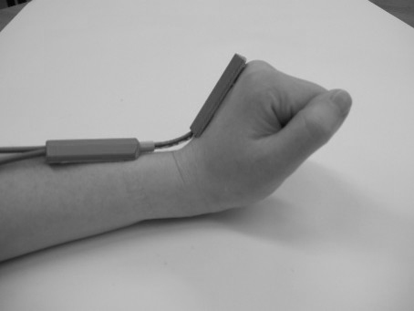

Shakshat Virtual Lab 
INDIAN INSTITUTE OF TECHNOLOGY GUWAHATI
| nbsp; | |||||
|
About Experiment Procedure
Direct Method Direct body measuring instruments mostly used are: simple goniometer and electrogoniometer .A physical environment is simulated where the subject is asked to perform their activities and different angular measurement of the body is taken.
Indirect Method
Indirect measurements may be taken through photographic methods, using still photography and filming the above work performed. For dynamic measurements, subjects are asked to perform the intended tasks in actual and or simulate situations and the relevant measurements are done through different softwares or manually through the help of different standard scales.
|
|
||||
Contact Goniometer |
Electro Goniometer |
||||
|  | |||||
| Click the arrow buttons to move the scale | |||||
| |
|||||